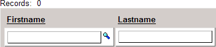
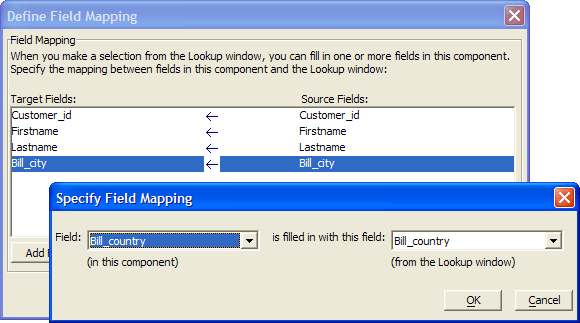
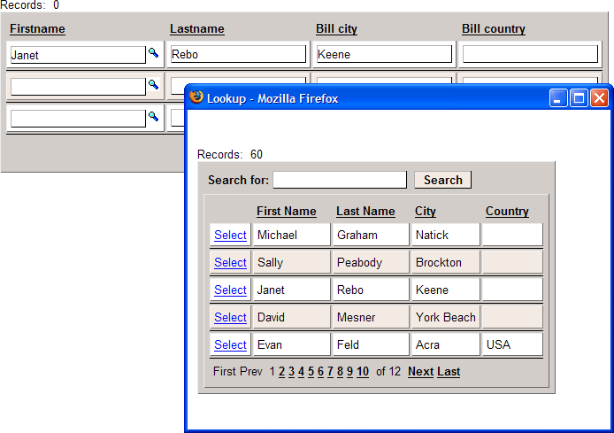

Defining Lookups for Text Boxes
A text box control on a grid component or dialog component may have an associated lookup window (the source grid) that can be used to set the values of one or more fields with a single click (V7).
 Note : If you want
to define a lookup for a text box control that is on the search
part of a grid, then set the Search Properties
> Search Options > Search style to "1" and Search Properties > Search Options > Allow 'Query By
Form' syntax to "False".
Note : If you want
to define a lookup for a text box control that is on the search
part of a grid, then set the Search Properties
> Search Options > Search style to "1" and Search Properties > Search Options > Allow 'Query By
Form' syntax to "False".
The text box lookup is defined in three parts.
define the lookup grid that will respond to the call
define the properties of the text box control that initiates the lookup
define the properties of other controls that will receive values
Create a tabular grid containing the fields that you want to retrieve. This "source" grid can be based on the same or a different table as a "destination" grid. This grid may have a quick search feature. Save this grid.
Define the Text Box Properties
Create the "destination" grid or dialog component. The grid must be updateable.
Select the field in the Selected Fields list that will have the lookup. The control type may be "TextBox" or "TextArea". If a field is a lookup field, then an icon is shown to the right of the control. Pressing the icon opens a second browser window which displays the lookup window (the "source" grid component). When the user makes a selection in the lookup window, the component will fill in one or more fields in the "destination" grid.

Select "True" in the Lookup > Lookup field.
Click the
 button in the Lookup > Lookup definition
field to display the Define Lookup Window dialog.
button in the Lookup > Lookup definition
field to display the Define Lookup Window dialog.Click the
button in the Lookup Window > Grid
name field to select the "source" grid component that
will be providing the lookup values.Optionally, change the Lookup Window > Window title field. By default, this takes the column label of the field you selected in the "destination" grid.
Optionally, change the Lookup Window > Width and Lookup Window > Height fields. The measurements are in pixels.
Optionally, clear the Lookup Window > Scrollbars check box to remove the window's scrollbars. If the Lookup window displays a Grid that has a Detail View, then when a Detail View is open, the Lookup window will probably not be high enough to display the Detail View record, and so in this case you would want to enable scrollbars.
Optionally, change the Lookup Window > Select record link label caption.
Optionally, click the
button in the Lookup Window >
Select record link label style field to open the Style
Editor and define custom HTML coding.Click the
button in the Field Mapping > Field
map field to display the Define Field Mapping
dialog.

This dialog allows you to specify a map between fields in the Lookup window and fields on your grid or dialog component. For example, your grid or dialog component might have these fields (among others) on it: I D, Fname, Lname, and Company. The Lookup window grid might have these fields (among others) on it: CustomerID, Firstname, Lastname, and CompanyName. You can map the CustomerID field to the ID field, the Firstname field to the Fname field and so on. When the user makes a selection in the Lookup window, the Lookup window closes, and the corresponding data from the Lookup window is filled into the destination grid or dialog component.
 Note : The Define Field Mapping dialog only shows fields that
are displayed in text boxes in the Lookup window.
Note : The Define Field Mapping dialog only shows fields that
are displayed in text boxes in the Lookup window.
Click Add Field, select a destination field from the drop-down list at left, select the source field from the Lookup window list at right, and click OK. Repeat for all the fields you wish to insert into a record.
Click OK to return to the Define Lookup Window dialog.
Make a selection from the Main Window > Link type field. The options are "Text" and "Icon". This field specifies the link that appears to the right of the textbox or textarea control and that opens the Lookup window.
If the choice in the previous field was "Icon", enter the relative path to the graphic you want to use. If the choice was "Text", enter the text to use in the Main Window > Link label field.
Optionally, define an in-line HTML style for the link label text in the Main Window > Link label style field.
Optionally, click the
button in the Advanced > Override
settings property to display the Override Properties
dialog. Use the Existing Properties tab and
the Setting Grid Properties
topic as references. Place new values into the Override
Properties tab.Optionally, add filter and order parameters into the Advanced > Query parameters property. This expression will select the records that appear in the lookup grid. For more information about formatting these expressions, see A5W Page Link, Filter, and Order Syntax and Automatically Populating Linking Field Values.
Click OK to return to the Grid Builder.
After placing your grid or dialog component on a page, publishing it, and opening it in your browser you will see something like this. Clicking next to a field in the Firstname column displays the Lookup window. Clicking the Select link to the left of a row in the Lookup window copies all of the fields in that row to your page.

This example also has a Quick Search field.
The JavaScript a5_html_popup_generic.js file determines the position of the position of the popup window. The JavaScript code places the top left corner of the popup at the icon used to open it. If the window does not fit, the JavaScript repositions the window. This calculation is based on the new window size and the existing window height and width. On some screens, the popup may appear slightly off screen. If you are proficient with JavaScript, you can edit the a5_html_popup_generic.js file to modify the value of the screen.width variable or force a particular top and left position.
Defining Other Control Properties
Other grid controls that will receive values need to be editable. If you wish to hide a control that will receive a value, uncheck its "hide row" property and convert the field type from "textbox" to "hidden".
See Also
Creating a Grid Component, Setting Grid Control Properties, Setting Grid Properties, A5W Page Link, Filter, and Order Syntax, Automatically Populating Linking Field Values
Limitations
Web publishing applications only.